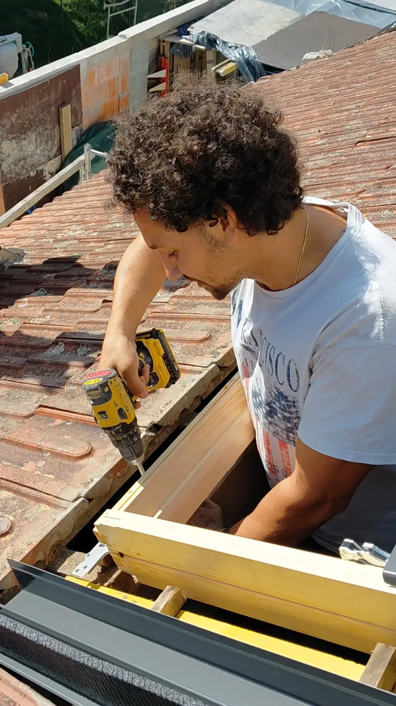

Un interlocuteur unique
La même personne vous conseille, prépare l’intervention et suit votre chantier.
Une entreprise à taille humaine
Chez Net Toiture, vous savez qui intervient chez vous. Frédéric vous accompagne personnellement, de la première visite jusqu’à la présentation du résultat final.
Échanger avec Frédéric
Notre histoire
Net Toiture est née d’une volonté simple : proposer un travail sérieux, lisible et réellement adapté à chaque habitation.
Notre organisation volontairement à taille humaine nous permet de rester disponibles, de suivre chaque chantier avec attention et de préserver une relation directe avec nos clients.
Sur le terrain, Frédéric reste votre interlocuteur principal. Il observe la toiture, vous explique les solutions possibles et réalise personnellement les interventions.
Nos engagements
La même personne vous conseille, prépare l’intervention et suit votre chantier.
Nous proposons uniquement les prestations utiles et compatibles avec votre couverture.
Protection des abords, travail organisé et nettoyage des lieux après l’intervention.
Les photos avant et après vous permettent de constater clairement le travail réalisé.
Notre manière de travailler
État, matériau, surface et accès sont vérifiés avant toute proposition.
Les solutions et tarifs sont détaillés selon la faisabilité réelle du chantier.
La méthode, le matériel et les conditions météo sont adaptés à votre toiture.
Le chantier est vérifié avec vous et illustré par des photos avant et après.
Secteur d’intervention
Basés à Saint-Joachim, nous intervenons principalement en Loire-Atlantique : de Pornic au Croisic, autour de Saint-Nazaire, Saint-Herblain et Orvault.
Un déplacement plus éloigné reste possible lorsque la nature du chantier le justifie.
Parlons de votre toiture
Expliquez-nous votre besoin. Frédéric vous recontacte pour échanger sur votre toiture et convenir d’une visite.
Demander un devis